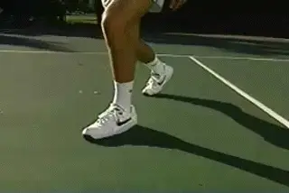
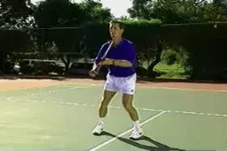

← Bài trước: World Class Movement | 🏠 Footwork Trang chủ | Bài tiếp: → Court Movement: The "Float" Move
Di chuyển sân: Cú bắt lưới
Thư viện kiến thức quần vợt thống nhất — Cơ bản, Phân tích kỹ thuật, Thư viện tham khảo và nhiều hơn nữa
Di chuyển sân: Cú bắt lưới
Bob Hansen
Giống như ở sân sau, di chuyển tốt ở lưới bắt đầu bằng Pha di chuyển ban đầu trên cả cú thuận tay và trái tay bắt lưới. Pha di chuyển ban đầu ở lưới tương tự như các cú đánh sân sau. Hãy xem trước cú thuận tay.
Pha di chuyển ban đầu: Cú thuận tay
Trên cú thuận tay, pha di chuyển ban đầu bắt đầu bằng chân: một đẩy với chân bên trong và một bước với chân bên ngoài đến bóng.
Giống như với các cú đánh sân sau, chân bên ngoài là chân trái, gần bóng hơn (đối với người đánh phải).
Chân bên trong xa bóng là chân trái. Sự khác biệt thực sự duy nhất so với cú thuận tay sân sau là xoay vai ngắn hơn một chút.

Cú thuận tay bắt lưới bắt đầu bằng một đẩy với chân bên trong, một bước với chân bên ngoài và xoay vai đến bóng.
Thế đứng
Bây giờ người chơi đã sẵn sàng đánh. Anh ta có thể bước vào đường bóng với chân trước. Anh ta cũng có thể đánh từ vị trí xoay vai cân bằng này.
Xem các tay vợt hàng đầu và thấy rằng họ thường đánh cú bắt lưới với vị trí thế đứng mở này.

Từ pha di chuyển ban đầu, người chơi cân bằng và sẵn sàng đánh mở hoặc đóng.
Bước nhảy vọt
Trên bóng rộng hơn, bạn chỉ cần tăng chiều dài của bước đầu tiên để đi sau bóng. Nếu cần thiết, bạn cũng có thể bước nhảy vọt đến bóng với chân trước.
Nhìn xem tôi có thể bao phủ bao nhiêu diện tích chỉ với hai bước: bước dài trong pha di chuyển ban đầu và bước nhảy vọt. Tôi vẫn cân bằng và cũng tiếp tục di chuyển về phía lưới theo đường chéo để cắt ngắn bóng đến.

Trên bóng rộng hơn, tăng chiều dài của bước đầu tiên và thêm bước nhảy vọt nếu cần thiết.

Để phục hồi, chân bên trong thay thế chân bên ngoài khi tôi quay lại vị trí sẵn sàng.
Phục hồi
Lượt trao đổi phục hồi cũng tuân theo cùng một mẫu như các cú đánh sân sau. Xem cách tôi trao đổi chân và quay lại vị trí sẵn sàng.
Điều này cho phép tôi di chuyển theo bất kỳ hướng nào từ bóng tiếp theo của đối thủ.
Hiệu quả của mẫu phục hồi này có thể quan trọng hơn ở lưới hơn là ở sân sau, do thời gian giữa các cú đánh ngắn hơn.
Cú trái tay bắt lưới
Bây giờ hãy xem xét chuỗi cú đánh và phục hồi trên cú trái tay bắt lưới.
Mẫu và chuỗi nên bắt đầu quen thuộc vào lúc này, với cùng các thành phần như các cú đánh sân sau và cú thuận tay bắt lưới.
Thành phần bao gồm:
Pha di chuyển ban đầu
Bước đến bóng
Lượt trao đổi phục hồi
Xem trong hoạt ảnh cách tôi trao đổi chân bên ngoài và chân bên trong để bắt đầu phục hồi.

Pha di chuyển ban đầu, cú đánh và phục hồi trên cú trái tay bắt lưới.
Thế đứng mở
Lại một lần nữa, tôi có tùy chọn đánh từ chân trước hoặc đánh thế đứng mở.
Để đạt được bóng rộng hơn, giống như trên cú thuận tay, tôi có thể tăng kích thước của bước đầu tiên và thêm bước nhảy vọt nếu cần thiết.
Tiếp theo, chúng ta sẽ xem cách tăng tốc pha di chuyển đầu tiên, di chuyển tổng thể trong quá trình chuyển sang lưới, và đặc biệt là trả giao bóng.

Trong các lượt trao đổi nhanh, bạn có thể đánh cú trái tay bắt lưới thế đứng mở sau pha di chuyển ban đầu.

Bob Hansen là huấn luyện viên trưởng đội nam đại học lâu năm tại Đại học California ở Santa Cruz, nơi anh đã dẫn dắt đội Banana Slugs của mình giành được 4 danh hiệu vô địch quốc gia NCAA Division 3.
Anh cũng là giám đốc của Nike Tennis Camp tại Santa Cruz, nơi anh đã giúp phát triển hàng trăm tay vợt cao cấp và tay vợt trẻ. Lý thuyết di chuyển sân của Hansen là tiên phong trong lĩnh vực huấn luyện quần vợt, và được công nhận rộng rãi là một đóng góp quan trọng trong việc hiểu bộ chân trong trò chơi hiện đại.
Nguồn: tennisplayer.net lưu trữ — Court Movement - The Volley.docx (Thư viện giảng dạy của John Yandell, 2002-2022). Đã được trích xuất và hiển thị dưới dạng HTML cho Tennis Future Lab.